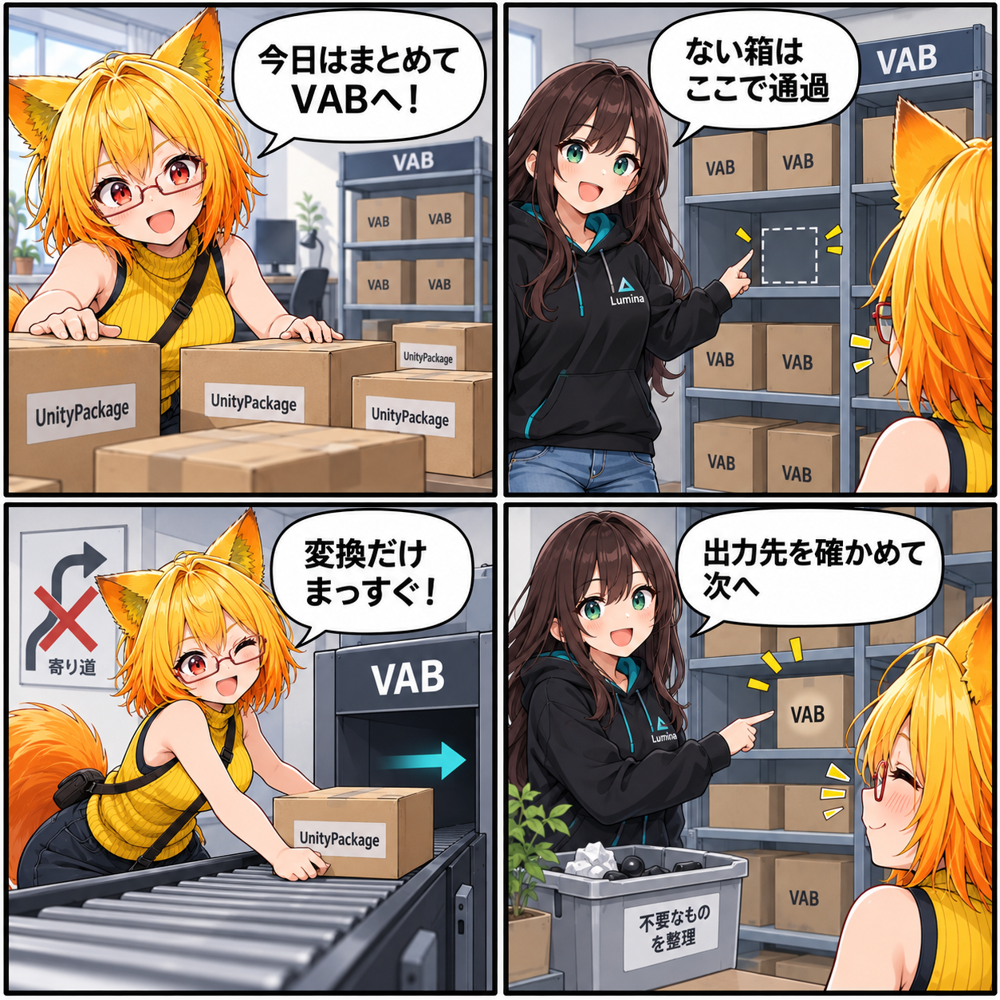

箱を開けても、寄り道しない日
UnityPackageから複数のアバターをVABへ変換するときは、ひとつずつ確かめながらも、余計な寄り道を増やしたくありません。今回は、変換だけを行う入口と、一括処理を止めにくくする確認経路を整えました。

変換のあとに、もう一度読み込まない
これまでのUnityPackage変換は、VABを書き出したあとに、その生成物を通常のアバター経路で読み込み直していました。一括変換では変換結果のファイルが必要なので、今回、生成したアバターを再読込せずVABの保存先を返す変換専用の入口を加えました。
通常の読み込み経路は従来どおり使えます。一方で一括処理は、必要なVABを書き出すことへ集中できます。変換後は返されたパスが期待するライブラリの保存先と一致することを確認し、出力が一つだけあることを確かめてから完了として扱います。
ない箱は、そこで通過する
一括処理の対象に指定したUnityPackageがディスクにないとき、以前はそこで例外になり、残りの対象まで進みにくい状態でした。今回は見つからないパッケージをログへ残してスキップし、後ろにある対象の変換を続けるようにしました。
これは、存在しない入力を成功扱いにする変更ではありません。変換する対象だけを順番に処理し、実際に書き出せたものについては保存先を照合する、という役割分担です。
途中の作業台も、最後に空ける
バッチの実行中はUnityのアセンブリ再読み込みをロックし、処理の途中で環境が切り替わることを避けます。終わりには一時オブジェクトを破棄し、未使用アセットを解放して、次の処理へ持ち越さないようにしました。
この日記で記しているのは、集計期間内にコミットされたコードの内容です。日記制作時点でUnity実行、VR実機、性能計測は行っていません。
ほかにも進んだこと
同じ集計期間には、AdaptiveGIとVBG Colliderの自動生成、PhysBone 4.5 Legacy変換でのLimit Rotation Curve保持、PotaToon・Beautifyの状態復元と描画監査、Skyboxパノラマの継ぎ目補正なども入りました。今回は、複数のアバターを変換するときの道筋を短く確かめやすくする変更に焦点を当てています。
4コマの裏話
段ボール箱と保管棚はUnityPackageとVABの比喩です。空の棚は見つからない入力を、そのまま通り過ぎる矢印は変換専用経路を表しています。実際のアプリ画面や変換結果を再現したものではありません。
まとめ
UnityPackageからVABへの一括変換で、生成物の再読込を省く変換専用経路を用意し、欠けた入力をスキップしながら後続を続けられるようにしました。書き出したVABは期待した保存先と出力数を確認し、バッチの前後では再読み込みと一時リソースも整理します。
本日のひとこと
行き先が確かなら、道のりはもっと軽くなる。